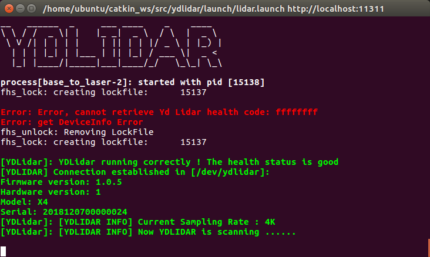
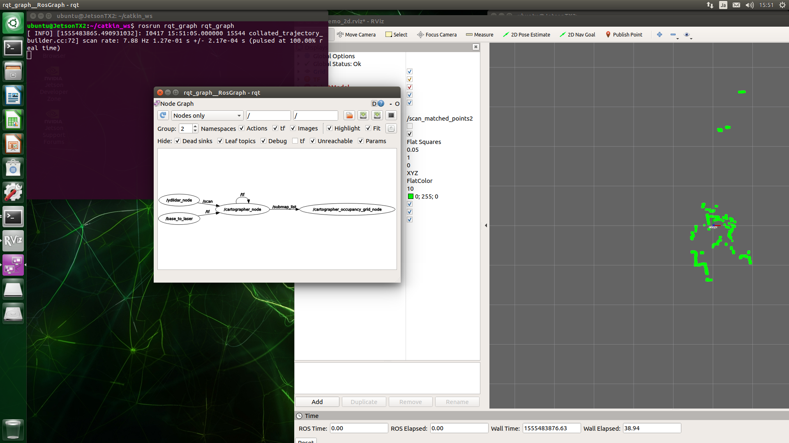

YLiDARとCartographer連携
YDLiDARパラメータ変更
lidar.launch
vi ~/catkin_ws/src/ydlidar/launch/lidar.launch
diffコマンドの結果:
1 2 3 4 5 6 7 8 9 10 11 12 13 14 15 16 17 18 19 20 | diff -u ~/catkin_ws/src/ydlidar/launch/lidar.launch.org ~/catkin_ws/src/ydlidar/launch/lidar.launch --- /home/ubuntu/catkin_ws/src/ydlidar/launch/lidar.launch.org 2019-04-17 13:59:25.209638390 +0900 +++ /home/ubuntu/catkin_ws/src/ydlidar/launch/lidar.launch 2019-04-17 14:54:00.263965585 +0900 @@ -9,12 +9,12 @@ <param name="reversion" type="bool" value="false"/> <param name="angle_min" type="double" value="-180" /> <param name="angle_max" type="double" value="180" /> - <param name="range_min" type="double" value="0.1" /> + <param name="range_min" type="double" value="0.08" /> <param name="range_max" type="double" value="16.0" /> <param name="ignore_array" type="string" value="" /> <param name="samp_rate" type="int" value="9"/> - <param name="frequency" type="double" value="7"/> + <param name="frequency" type="double" value="15"/> </node> - <node pkg="tf" type="static_transform_publisher" name="base_link_to_laser4" - args="0.2245 0.0 0.2 0.0 0.0 0.0 /base_footprint /laser_frame 40" /> + <node pkg="tf" type="static_transform_publisher" name="base_to_laser" + args="0.0 0.0 0.18 0.0 0.0 0.0 /base_link /laser_frame 100" /> </launch> |
値を反映します。
1 2 3 | cd ~/catkin_ws catkin_make_isolated --install --use-ninja source install_isolated/setup.bash |
Cartographerパラメータ変更
demo_revo_lds.launch
cartographerはdemoを修正して使うことにします。
ポイントはremapがfromとto共にscanになることです。
一番最後のrvizは他のマシンでrvizを起動出来るようにするために消します。
rosbag playは消してリアルタイムSLAMとして使います。
sudo vi /opt/ros/melodic/share/cartographer_ros/launch/demo_revo_lds.launch
diffコマンドの結果:
1 2 3 4 5 6 7 8 9 10 11 12 13 14 15 16 17 18 | --- /opt/ros/melodic/share/cartographer_ros/launch/demo_revo_lds.launch.org 2019-04-17 13:16:05.360885434 +0900 +++ /opt/ros/melodic/share/cartographer_ros/launch/demo_revo_lds.launch 2019-04-17 14:43:28.350731814 +0900 @@ -22,7 +22,7 @@ -configuration_directory $(find cartographer_ros)/configuration_files -configuration_basename revo_lds.lua" output="screen"> - <remap from="scan" to="horizontal_laser_2d" /> + <remap from="scan" to="scan" /> </node> <node name="cartographer_occupancy_grid_node" pkg="cartographer_ros" @@ -30,6 +30,4 @@ - <node name="rviz" pkg="rviz" type="rviz" required="true" - args="-d $(find cartographer_ros)/configuration_files/demo_2d.rviz" /> - <node name="playbag" pkg="rosbag" type="play" - args="--clock $(arg bag_filename)" /> </launch> |
revo_lds.lua
sudo vi /opt/ros/melodic/share/cartographer_ros/configuration_files/revo_lds.lua
diffコマンドの結果:
1 2 3 4 5 6 7 8 9 10 11 12 13 14 15 16 17 18 19 20 21 22 23 24 | --- /opt/ros/melodic/share/cartographer_ros/configuration_files/revo_lds.lua.org2019-04-17 13:54:39.108638478 +0900 +++ /opt/ros/melodic/share/cartographer_ros/configuration_files/revo_lds.lua 2019-04-17 14:54:50.892098740 +0900 @@ -19,8 +19,8 @@ map_builder = MAP_BUILDER, trajectory_builder = TRAJECTORY_BUILDER, map_frame = "map", - tracking_frame = "horizontal_laser_link", - published_frame = "horizontal_laser_link", + tracking_frame = "laser_frame", + published_frame = "laser_frame", odom_frame = "odom", provide_odom_frame = true, publish_frame_projected_to_2d = false, @@ -45,8 +45,8 @@ MAP_BUILDER.use_trajectory_builder_2d = true TRAJECTORY_BUILDER_2D.submaps.num_range_data = 35 -TRAJECTORY_BUILDER_2D.min_range = 0.3 -TRAJECTORY_BUILDER_2D.max_range = 8. +TRAJECTORY_BUILDER_2D.min_range = 0.08 +TRAJECTORY_BUILDER_2D.max_range = 16. TRAJECTORY_BUILDER_2D.missing_data_ray_length = 1. TRAJECTORY_BUILDER_2D.use_imu_data = false TRAJECTORY_BUILDER_2D.use_online_correlative_scan_matching = true |
rvizを用意
sudo vi /opt/ros/melodic/share/cartographer_ros/launch/demo_rviz.launch
1 2 3 4 5 6 7 8 9 10 11 12 | <launch> <param name="/use_sim_time" value="true" /> <node name="rviz" pkg="rviz" type="rviz" required="true" args="-d $(find cartographer_ros)/configuration_files/demo_2d.rviz"> </node> </launch> |
環境変数の設定
他のPCからアクセス可能にする場合は、roscoreを実行する前に環境変数を設定します。
1 2 | $ export ROS_MASTER_URI=http://自分のIP:11311 $ export ROS_IP=自分のIP |
起動
1 | $ roscore &
|
roscoreが起動するまで待ちます。
1 | $ roslaunch ydlidar lidar.launch &
|
ydlidarが起動するまで待ちます。

1 2 | $ roslaunch cartographer_ros demo_revo_lds.launch &
$ roslaunch cartographer_ros demo_rviz.launch
|

グラフ
グラフを表示
1 | $ rosrun rqt_graph rqt_graph |

他のPCからの接続
rvizを用意
sudo vi /opt/ros/melodic/share/cartographer_ros/launch/demo_rviz.launch
1 2 3 4 5 6 7 8 9 10 11 12 | <launch> <param name="/use_sim_time" value="true" /> <node name="rviz" pkg="rviz" type="rviz" required="true" args="-d $(find cartographer_ros)/configuration_files/demo_2d.rviz"> </node> </launch> |
環境編数
1 2 | $ export ROS_MASTER_URI=http://roscoreを起動しているマシンのIP:11311 $ export ROS_ID=自分のIP |
rvizを起動
1 | $ roslaunch cartographer_ros demo_rviz.launch |